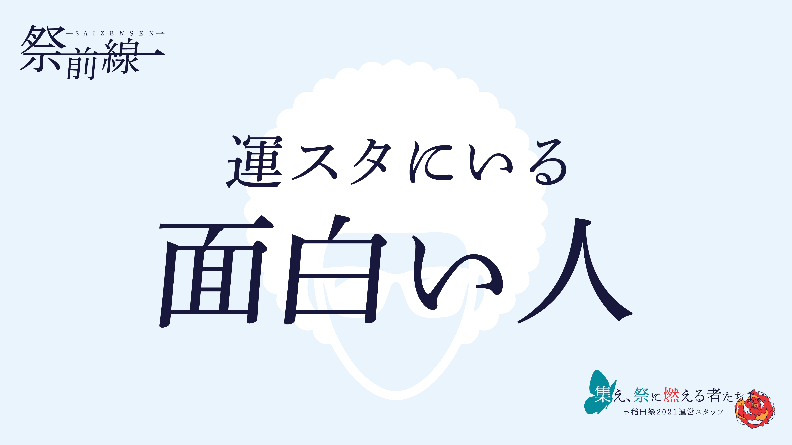
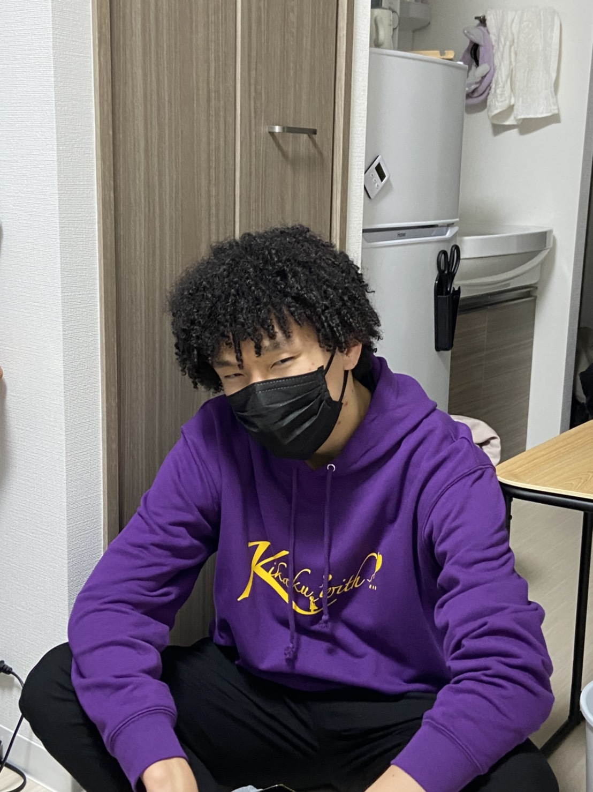
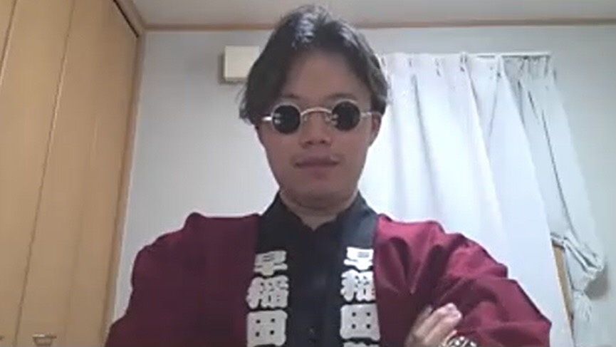

<!DOCTYPE html>
<html>
  <head>
    <meta charset="utf-8">
     <title>運スタの早稲田祭当日</title>
        <meta name="description" content="運スタの早稲田祭当日">
      <link rel="stylesheet" href="AR0418.css">
      <link rel="icon" type="png" href="logo.png">
      
  </head>
  <body>
    

    <header>
      <!--▽▽ヘッダーロゴ▽▽-->
            <div class="logo1">
                <a href="https://wasedasai2021shinkan.github.io/toppage/" id="headerlogo">
                </a>
            </div>
      <!--△△ヘッダーロゴ△△-->
      
      
      <!--▽▽ハンバーガーメニュー▽▽-->
            <div id="hamburger">
                <div class="icon">
                    <span></span>
                    <span></span>
                    <span></span>
                </div>
            </div>
      <!--△△ハンバーガーメニュー△△-->
      
       
      <!--▽▽ハンバーガーメニューのリスト▽▽-->
            <nav class="sm navi">
              <ul class="lists">
                <li class="lili"><a  class="listwords" href="https://wasedasai2021shinkan.github.io/daihyouaisatsu/">代表挨拶</a></li>
                <li class="lili"><a  class="listwords" href="https://wasedasai2021shinkan.github.io/about/">早稲田祭について</a></li>
                <li class="lili"><a  class="listwords" href="https://wasedasai2021shinkan.github.io/event/">新歓イベント</a></li>
                <li class="lili"><a  class="listwords" href="https://wasedasai2021shinkan.github.io/katsudounitsuite/">活動について</a></li>
                <li class="lili"><a  class="listwords" href="https://wasedasai2021shinkan.github.io/rensai/">連載記事</a></li>
                <li class="lili"><a  class="listwords" href="https://wasedasai2021shinkan.github.io/schedule/">年間スケジュール</a></li>
                <li class="lili"><a  class="listwords" href="https://wasedasai2021shinkan.github.io/photogallery/">フォトギャラリー</a></li>
                <li class="lili"><a  class="listwords" href="https://wasedasai2021shinkan.github.io/nyukai/">入会方法</a></li>
                <li class="lili"><a  class="listwords" href="https://wasedasai2021shinkan.github.io/otoiawase/">お問い合わせ</a></li>
             </ul>
           </nav>
      <!--△△ハンバーガーメニューのリスト△△-->
      
  
      <!--▽▽ヘッダーリスト▽▽-->
            <nav class="pc navi">  <!--pcクラスを追記-->
              <ul class="lists">
        <li class="lili"><a  class="listwords" href="https://wasedasai2021shinkan.github.io/daihyouaisatsu/">代表挨拶</a></li>
      <li class="lili"><a  class="listwords" href="https://wasedasai2021shinkan.github.io/about/">早稲田祭について</a></li>
      <li class="lili"><a  class="listwords" href="https://wasedasai2021shinkan.github.io/katsudounitsuite/">活動について</a></li>
      <li class="lili"><a  class="listwords" href="https://wasedasai2021shinkan.github.io/photogallery/">フォトギャラリー</a></li>
      <li class="lili"><a  class="listwords" href="https://wasedasai2021shinkan.github.io/otoiawase/">お問い合わせ</a></li>
              </ul>
            </nav>
      <!--△△ヘッダーリスト△△-->
      
          </header>
      
          <script src="jquery-3.6.0.min.js"></script>
            <script>
              $('#hamburger').on('click', function(){
              $('.icon').toggleClass('close');
              $('.sm').slideToggle();
              });
        
            </script>
            
            <div class="texts">
              <h1>運スタにいる面白い人</h1>
            <p>広告研究会と放送研究会に並んで、早稲田祭運営スタッフは早稲田大学にある3大サークルの1つと言われています。約600人からなるメンバーの中に「面白い人」が存在しないはずがありません。この記事ではそんな彼らのごく一部に話を聞きました！</p>
            <div class="mokuji">
            <p>①平形元ー運スタで一番の頭髪ー</p>
<p>②高山都ーチンアナゴと赤色灯ー</p>
<p>③福田綜ー渉外局の異端児ー</p>
<p>④稲葉彩夏ー永遠無職ー</p>
<p>⑤齋藤天太ーTwitterで炎上？！ー</p>
</div>
<div class="kiji">
<h2>平形元ー運スタで一番の頭髪ー</h2>
<p>ー早稲田祭当日のアフロヘアが話題になっていましたが、どうしてアフロにしたんですか？</p>
<p>ちょっと尖りたかったんですよね(笑) 「アフロ　美容院」で検索して出てきた代官山の美容院で、2万円くらい払ってアフロにしてもらいました。電車での視線はすごかったですね…… でも三日目くらいで人の目を気にしなくなりました。</p>
<p>ーアルバイトは休まれたんですか？</p>
<p>そうですね。塾のアシスタントのバイトをしていたんですけど、早稲田祭のためにアフロにして2週間お休みしました。</p>
<p>ーお風呂や朝のヘアセットが大変そうですが……</p>
<p>水に濡らすとパーマみたいになる（写真参照）ので、そこまで支障はなかったですよ。朝もくしでとかせばふわっとなるのであまり苦労はしませんでしたね。</p>

<p>ー早稲田祭当日の周囲の反応はどうでしたか？</p>
<p>かなり見られました。まあ見られたかったんですけど(笑) 話したことない人にも「触っていいですか？」って言われましたね。
</p>
<p>ー2021年度の早稲田祭は果たしてどんなヘアスタイルになるのか、注目ですね。
</p>
<p>期待しててください(笑) ちなみにアフロは二度としません！</p>
</div>
<div class="kiji">
<h2>高山都ーチンアナゴと赤色灯ー</h2>
<p>ー運スタに入ったきっかけは何ですか？</p>
<p>すごくお世話になった高校の先輩がいて、早稲田に入ったら運スタだよねと言われていたので、洗脳されたように運スタに入りました。
</p>
<p>ー入会した当時から動線管理チームに入りたい気持ちが強かったそうですね。
</p>
<p>赤色灯を持ちたかったんです。赤色灯と全く同じ太さと長さのチンアナゴのぬいぐるみが家にあるんですけど、それを持って、部屋でこう、やってみたんです。こっちでーすみたいな。で、いいねって思ってこれを手元に置きながらチーム配属の志望理由書きました。妹にも「いい感じ？」って聞いたら、いいんじゃないって言われて。まあ全然見てなかったんですけど。じゃあこれかなーと思って入りました。</p>
<p>当時の局長さんとZoomで面談してたら、動線管理チームへの熱意を語りすぎてバイト遅れそうになって、駅までダッシュしました。どうでもよ、ごめんなさいなんか(笑)</p>
</div>
<div class="kiji">
<h2>福田綜ー渉外局の異端児ー</h2>
<p>ー運スタに入ったきっかけを教えてください。
</p>
<p>中高の友達に誘われたからです。今その子とはチームは違うけれど、同じ渉外局で活動してます。</p>
<p>ー渉外局ではどんな仕事をしてるんですか？
</p>
<p>企業にアポイントを取ったりしてますね。僕、企業チームの志望理由3000字書いたんですよ。</p>
<p>ー3000字！ すごいですね…… じゃあ企業チームでは結構活躍されてるんですか？</p>
<p>同期の最高アポイント数が136に対して僕は3でした！
</p>
<p>ーえ？ 満を持して入ったのに？</p>
<p>ただチームで活躍できなかった代わりに超局PJでは劇の脚本を書いたりしてて、運スタへのパッションは結構あるんですよ。役作りのために髭も生やしました。</p>
<p>ーすごく雰囲気がありますね。</p>
<p>全然年相応に見られないんですよ。金髪の時もあったし。最近は中国からお気に入りのサングラスを取り寄せました。なんか間違えて2個買っちゃったんですけどね。</p>
<p>ー最後に新規へのメッセージをお願いします。</p>
<p>僕みたいなやつでも楽しくやっていけるから、運スタには安心して入ってほしいです！</p>

</div>
<div class="kiji">
<h2>稲葉彩夏ー永遠無職ー</h2>
<p>ーどうして運スタに入ろうと思ったんですか？</p>
<p>高校の時に文化祭実行委員やって楽しかったからっていうのと、人が多いから友達出来そうだなっていう、軽い理由です(笑)
</p>
<p>ー高校の時も今所属しているようなステージ系の企画をされてたんですか？
</p>
<p>高校の時は入ってはいたけどできるだけ楽な部署を選んでましたね。パンフレットの情報打ち込むとか、そんな感じです。
</p>
<p>ー今までバイトしたことがないって聞いたんですけど…… なんでですか？</p>
<p>え、なんでだろう…… 困ってないっていうのが一番の理由なんですよね。物欲があまりなくて。WIDって寮に住んでるんですけど、朝夜のご飯が出るのでそれも大きいですね。</p>
<p>ーこれから新規が入ってくると奢ることになるのでは？</p>
<p>いやあ、厳しいですね…… 同じチームの男子に任せようと思います。</p>
</div>
<div class="kiji">
<h2>齋藤天太ーTwitterで炎上？！ー</h2>
<p>ー早速炎上についての概要を教えてください</p>
<p>早稲田祭2020のオンライン開催が決定した時に、そのことを同じキャンパスに通う400人くらいが入っているLINEグループで宣伝したんですよ。まあ当然反応はないわけで。友達に煽られて直後に「今、100人規模の既読無視をいただきました」と言ってみたら、それがTwitter上で話題になってしまいました。ちょっとウケるかなと思った自分の考えが甘かったです。</p>
<p>ーどのように話題になったのですか？</p>
<p>まずLINEのスクショと一緒に「こいつ退会させていい？」みたいなツイートをされて、色々な人に非難されました。おもろって感じです。まあでも早稲田には多様性があるって言うじゃないですか。そういう言葉を言う人はどこにでもいるものだと受け止めています。</p>
<p>ーそんな経験から得られた教訓も踏まえて、最後に新規に何か一言お願いします。</p>
<p>うーん、他人に流されるな！</p>
<p>あっバイトの話していいですか？ 俺学童保育のバイトしているんですよ、子どもが好きなので。この話すると好感度上がるんだよね。</p>
</div>
<h4>いかがでしたでしょうか？ 全ては紹介しきれませんが、運スタには他にもたくさん個性的な人がいるので、少しでも興味を持ってくれたら嬉しいです！</h4>
</div>
            <footer>
              <div class="wrapper2">
                  <p class="title">WASEDASAI OPERATION STAFF</br>SHINKAN 2021</p>
                  <div class="innerbox">
                        
                      <a href="https://twitter.com/wasedasai_new?ref_src=twsrc%5Egoogle%7Ctwcamp%5Eserp%7Ctwgr%5Eauthor" target="_blank" > 
                           
                      </a>
            
                      <a href="https://www.instagram.com/wasedasai_new/" target="_blank" > 
                           
                      </a>
            
                      <a href="https://lin.ee/RWS70z5" target="_blank" > 
                           
                      </a>
            
                      <a href="https://youtube.com/channel/UCwyXxBLHp1ku0arseLoIaGA" target="_blank" > 
                           
                      </a>
                  </div>
              </div>
                  <div class="footerlogo">
                      <a href="https://wasedasai2021shinkan.github.io/toppage/" target="_blank" > 
                           
                      </a>
                  </div>
            
            
                  <p><small>Copyright @ WASEDASAI2021 Staff All Rights Reserved. </small></p>
              </div>
            
            </footer>
            <style>
            footer {
              background-color: #78c1cd;
              text-align: center;
              padding: 26px 0;
              text-decoration: none;
            }
            
            footer p {
              color: #ffffff;
              font-size: 20px;
              font-family: serif;
            }
            .wrapper2 {
              background-color: #78c1cd;
            }
            
            
            .innerbox {
              margin-top: 5px;
              background-color: #78c1cd;
              text-align: center;
              width: 450px;
              margin: auto;
              display: flex;
              justify-content: space-around;/*水平方向に均等に分布(端は詰める)*/
            }
            
            .footerlogo{
              margin-top: 5px;
            }</style>
            
            </html>
